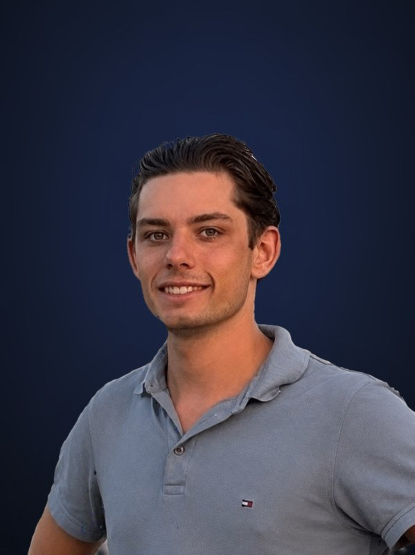
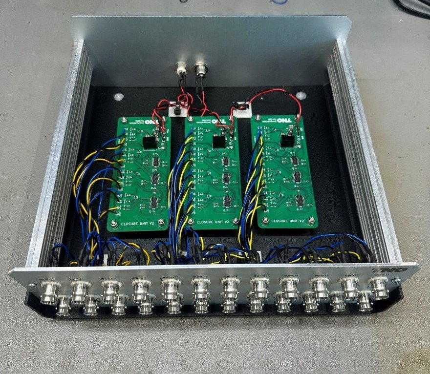
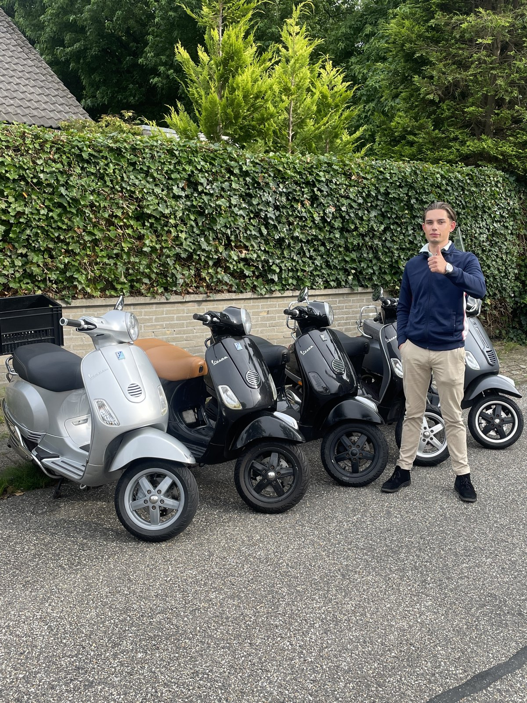
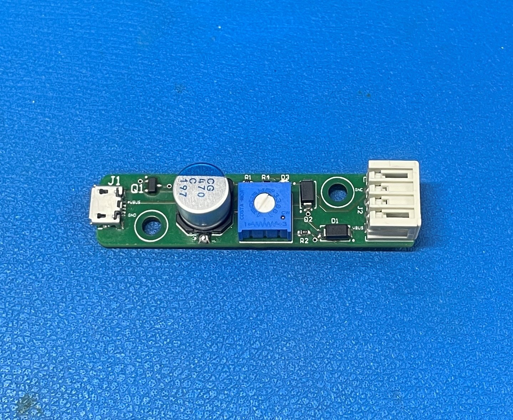
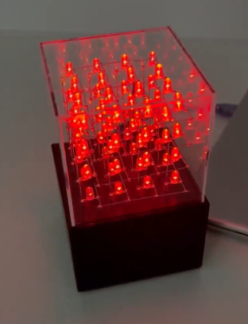
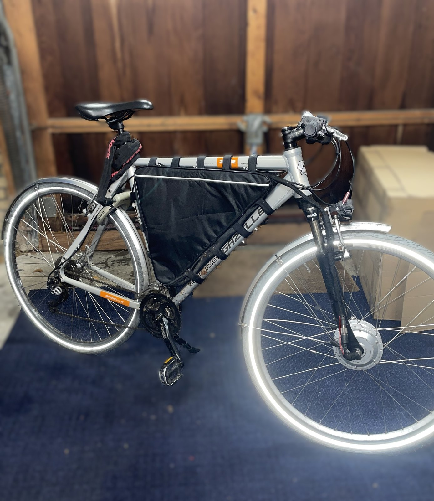
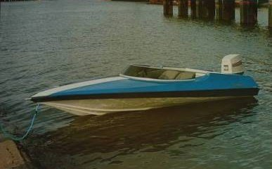
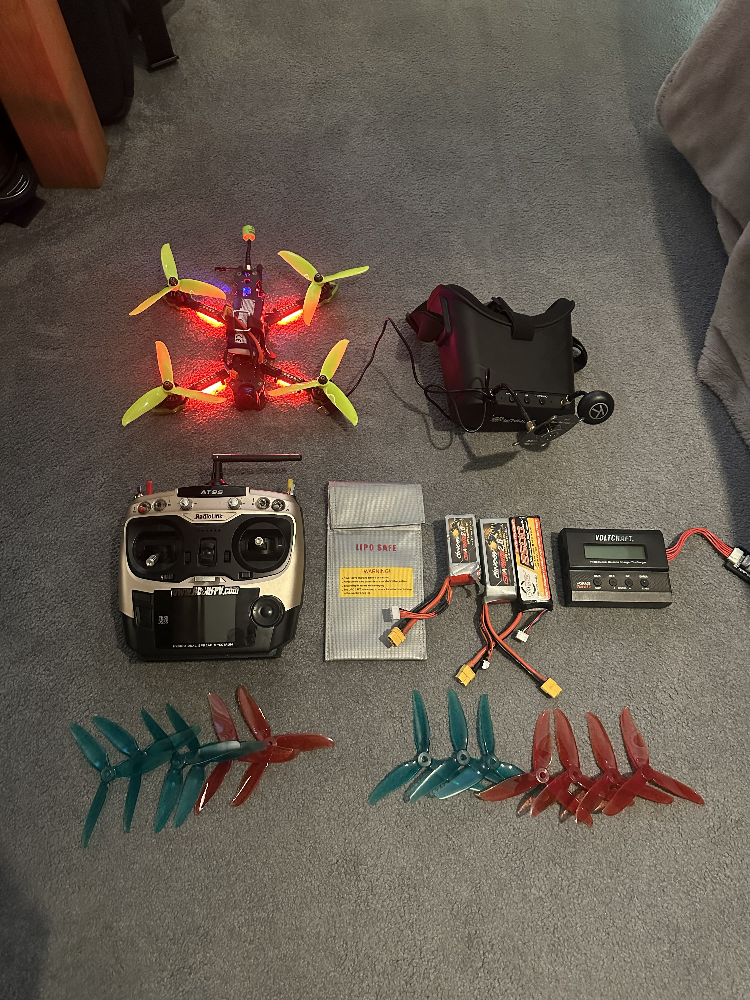
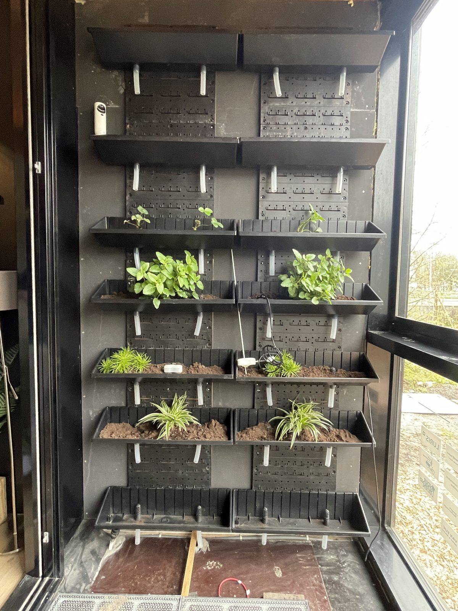

Mechatronica Engineer
Prototypes en onderdelen op maat, van idee tot werkend resultaat
Wat ik voor je kan doen
Van idee naar werkend prototype. Ik denk mee over wat er nodig is, ontwerp de elektronica en printplaat, teken de behuizing in SolidWorks en bouw het geheel. Inclusief solderen, testen en bijsturen tot het doet wat het moet doen.
Een adapter, houder, beugel of vervangend onderdeel nodig dat nergens te koop is? Ik ontwerp het op maat in SolidWorks en print het in 3D. Moet het precies aansluiten op iets bestaands, dan scan ik dat onderdeel eerst in, tot 0,05 mm nauwkeurig, zodat het in één keer goed past.
Meetopstellingen, storingen, elektrische systemen en kabelbomen. Loop je ergens op vast of weet je niet waar je moet beginnen? Dan denk ik mee en zoek ik uit wat er aan de hand is. Bij TNO bouw en bedien ik meetopstellingen met high-speed data-acquisitie tot 4 MHz.
Opdrachten voer ik uit onder de naam DJVB Solutions. Klein of groot, eenmalig of doorlopend: laat weten wat je nodig hebt en ik denk graag mee.
Bespreek je projectWat ik gebouwd heb

Voor TNO heb ik een closure unit ontwikkeld die snelle en betrouwbare data-acquisitie mogelijk maakt. Het zet closure-signalen (kortsluitcontacten) om naar bruikbare TTL-signalen, zodat maximaal 12 kanalen gelijktijdig en storingsvrij gemeten kunnen worden.
Van plan en componentkeuze tot het ontwerp van de elektronica: ik heb het project van A tot Z geleid. De PCB's heb ik zelf getekend en gesoldeerd met SMD-componenten.
Ik kan niet te diep ingaan op de onderzoeksdetails, maar het ontwikkelen van deze closure unit was een geweldige ervaring die ik samen met collega's bij TNO heb mogen uitvoeren.

Via VB Customs hebben we veel klanten geholpen met het aanpassen en onderhouden van hun Vespa- en Tomos-brommers, met ruim 100 verkochte brommers. Werkzaamheden omvatten echt alles: motoronderhoud, elektra aanpassen, remsysteem, storingen opsporen en oplossen, en opvoeren. Onderdelen die niet te koop waren, heb ik zelf op maat ontworpen en 3D-geprint. Elk project was anders en vroeg om een andere aanpak, wat het erg interessant maakte en me enorm veel heeft geleerd. Van simpele onderhoudsbeurten tot complexe elektrische problemen: geen dag was hetzelfde.
Het bedrijf runde ik samen met een compagnon: ik deed de inkoop, offertes, facturatie en boekhouding, mijn compagnon de verkoop en voorraad. Het bedrijf hebben we vanaf nul opgebouwd, inclusief KVK-inschrijving, huisstijl en belastingadministratie. Een unieke combinatie van technisch vakmanschap en ondernemerschap, waar ik een mooi netwerk aan heb overgehouden.

Tijdens mijn stage bij Mach Technology (voorheen Head Electronics B.V.) in Katwijk aan Zee hield ik me vooral bezig met het testen van printplaten (PCB's): controleren of ze goed functioneren. Dat testen heb ik geautomatiseerd, zodat er meer testen uitgevoerd konden worden. De printplaat gaat daarbij in een testkast, die vervolgens via software een reeks stappen doorloopt om meerdere componenten achter elkaar te testen. Daarnaast ontwierp en soldeerde ik zelf printplaten met SMD-componenten (Surface Mount Devices): minuscule onderdelen die direct op het oppervlak van de printplaat worden gesoldeerd.
Samen met het testengineeringteam ontwikkelde ik drie producten die uiteindelijk in de testkasten zijn toegepast. Een van die producten loste een hardnekkig probleem op met een Intel NUC minicomputer: de USB-poorten van de NUC hadden moeite met het gelijktijdig opstarten van meerdere USB-apparaten, waardoor sommige apparaten niet herkend werden. Mijn oplossing was een RC-kring, een eenvoudige schakeling met een weerstand (R) en een condensator (C). De condensator laadt langzaam op via de weerstand, waardoor een tijdvertraging ontstaat. De apparaten starten nog steeds tegelijk op, maar niet meer direct met de Intel NUC zelf, waardoor de NUC elk apparaat nu wel netjes herkent.

Dit eindproject voor het laatste jaar van Technicus Engineering was het meest uitdagende project dat ik tot dan toe had gemaakt. In 10 schoolweken bouwde ik van nul een volledig werkend prototype met multiplexing: de techniek om 64 LEDs individueel aan te sturen met slechts 7 uitgangen.
Alles is volledig eigen ontwerp: het elektrische schema, de PCB, de software en de kunststof behuizing (ontworpen in SolidWorks en geprint op een Ultimaker 3D printer), aangevuld met op maat gesneden plexiglas.
Multiplexing werkt via een matrix: je stuurt rijen en kolommen apart aan, zodat je met weinig uitgangen toch elk punt afzonderlijk kunt bedienen. Ditzelfde principe zit verwerkt in LED-displays, toetsenbordmatrixen en beeldschermen. Dit project gaf mij een sterke basis voor dat soort concepten.

Eerst wilde ik een kant-en-klare e-bike kopen, maar het leek me veel gaver om hem zelf te bouwen. Als basis gebruikte ik een bestaand fietsframe, maar het volledige elektrische systeem heb ik zelf ontworpen en opgebouwd: accu, motor, controller, sensoren bij de trapas en LED-verlichting. Van componentkeuze en dimensionering tot de uiteindelijke installatie en het rijklaar maken, alles volledig zelfstandig uitgevoerd.
Dit project gaf me veel inzicht in hoe elektrische systemen samenwerken en hoe je alles op elkaar afstemt voor optimale performance.

De aanleiding voor dit project was oxydatie: de originele kabels van de boot waren zo aangetast dat ze niet meer betrouwbaar werkten. In plaats van losse kabels te vervangen, ontwierp en monteerde ik een volledig nieuwe kabelboom van nul af aan en sloot alle elektrische systemen opnieuw aan. Van schematekening tot definitieve installatie en test.
Ik installeerde onder andere: 4 waterdichte speakers met een subwoofer, LED-verlichting, navigatieverlichting, een radio, contactslot, powertrim, accu en killswitch. Daarnaast voegde ik een hoofdrelais toe, zodat alle systemen centraal en veilig onderbroken kunnen worden. Alles is netjes georganiseerd in een controlepaneel zodat de bediening overzichtelijk blijft.
Het project vereiste nauwkeurig werken in een beperkte ruimte en gedegen kennis van marine elektra.
Daarnaast heb ik voor boten verschillende maatwerkonderdelen ontworpen en 3D-geprint, voor dingen die nergens kant-en-klaar te koop zijn.

FPV drones zijn een passie van mij, het gevoel van speed en controle is onbeschrijfelijk. In plaats van kant-en-klare drones te kopen, heb ik 3 custom builds gemaakt: ESCs solderen, flight controllers programmeren, frames assembleren en alles fine-tunen voor optimale performance.
Begonnen met twee 5-inch drones: eerst analoge beeldoverdracht, daarna overgestapt naar een DJI Digital FPV-systeem (1080p 60fps, latency ~40ms). De 3-inch is voor rustiger vliegen. Een groot deel van het leerproces zat in begrijpen wat elk component in de drone doet en hoe alles met elkaar in verhouding staat. Alles is op elkaar afgestemd, van propellerkeuze en motorgewikkeling tot accucapaciteit, zodat de drone zo snel en responsief mogelijk reageert (~20ms per input).
Vliegen met een FPV drone is een compleet andere wereld dan een DJI drone. In 3D-modus houdt de drone geen rekening meer met waar de grond is: je kunt hem omkeren, rollen en de meest extreme manoeuvres uitvoeren die bij een gewone drone simpelweg onmogelijk zijn.

Als schoolproject bij The Field in Leiden ontwikkelde ik een volledig automatisch watersysteem voor de beplanting in een vergaderruimte. Het systeem bestaat uit magnetische kleppen die de watertoevoer regelen, waterlekslangen die het water gelijkmatig verdelen, een pomp en een combinatie van vochtweerstands- en temperatuursensoren die continu de omstandigheden meten. Op basis van die sensordata stuurt de microcontroller de pomp en kleppen automatisch aan.
Dit deed ik samen met een medestudent; we waren gezamenlijk verantwoordelijk voor het complete systeem, van concept en hardware-ontwerp tot een werkende installatie. IT-studenten hebben de automatisering later verder verbeterd.
Over mij
Ik los technische problemen op van begin tot eind: uitzoeken wat er nodig is, de oplossing ontwerpen, onderdelen regelen en het bouwen. Mijn achtergrond ligt in elektronica, meetsystemen en mechatronica, met hands-on R&D-ervaring bij TNO en bewezen ervaring met het runnen van mijn eigen technische bedrijf. Waar ik het meeste energie van krijg, is een vaag probleem omzetten in een werkend resultaat.
Opdrachten neem ik aan onder de naam DJVB Solutions, van losse klussen tot een compleet traject.
Mijn pad
Mach Technology (voorheen Head Electronics B.V.), Katwijk aan Zee
Gewerkt aan geautomatiseerde testsystemen (ATE) waarmee printplaten van klanten worden gecontroleerd op betrouwbaarheid en correcte assemblage, waaronder stresstests en in-circuit tests van sporen en soldeerverbindingen. Kleinschalige PCB's met SMD-componenten ontworpen en met de hand gesoldeerd voor deze testopstellingen, en samen met het testengineering-team 3 PCB's ontwikkeld die daadwerkelijk in de testopstellingen worden gebruikt. Daarnaast de testopstellingen geüpgraded en onderhouden, technische storingen verholpen en werkplaatservaring opgedaan met CNC-bewerking, draaien en frezen.
The Field, Leiden
Samen met een medestudent een geautomatiseerd watersysteem voor planten ontwikkeld, draaiend op een Raspberry Pi, dat het watergebruik aanpast op basis van omgevingsfactoren. Gezamenlijk verantwoordelijk voor het complete systeem, van concept en hardware-ontwerp tot een werkende installatie. IT-studenten hebben de automatisering later verder verbeterd.
VB Customs, Wassenaar
Een bedrijf opgericht, gespecialiseerd in het customizen en onderhouden van Vespa- en Tomos-brommers: performance-upgrades, verlichtingsaanpassingen en maatwerkonderdelen. Het bedrijf samen met een compagnon gerund, met ruim 100 verkochte brommers. Ik was verantwoordelijk voor de inkoop, offertes, facturatie en boekhouding, mijn compagnon voor de verkoop en voorraad. Het bedrijf vanaf nul opgebouwd, inclusief KVK-inschrijving, huisstijl en belastingadministratie.
Van Bentem Elektrotechniek, Warmond
Parttime werkzaam als monteur elektrotechniek in de regio Zuid-Holland, met een werkbus van de zaak. Verantwoordelijk voor een breed scala aan elektrische klussen bij particuliere klanten: huisinstallaties aanleggen, groepenkasten plaatsen en uitbreiden, storingen opsporen en verhelpen, en extra verlichting zoals spotjes installeren. Op drukke dagen stond ik voor wel 8 spoedklussen gepland die ik zelfstandig moest uitvoeren. Dat vroeg om snel kunnen schakelen, goed probleemoplossend vermogen en nauw contact houden met de zaak. Ik kreeg veel verantwoordelijkheid: zelf naar klanten rijden, uitzoeken wat de storing of wens precies was, en ervoor zorgen dat alles netjes en veilig werd afgerond. Een enorm leerzame periode die mijn praktische kennis van elektrotechniek sterk heeft verbreed.
TNO, Ypenburg (Den Haag)
Meewerken aan R&D-projecten gericht op explosieven, munitie en beschermende voertuigsystemen. Ontwerpen, bouwen en bedienen van hoognauwkeurige meetopstellingen met high-speed data-acquisitiesystemen (tot 4 MHz), en ontwikkeling van een meetproduct dat closure-signalen omzet naar bruikbare TTL-signalen voor gelijktijdige meting van maximaal 12 kanalen. Daarnaast bouw van tools voor het verwerken en rapporteren van meetdata en het verwerken van 3D-scans in SolidWorks voor 3D-printen. De rol combineert ontwerpen, zelf bouwen, testen en data-analyse.
DJVB Solutions, eigen bedrijf
DJVB Solutions heb ik in 2024 opgericht, naast VB Customs. Mijn eerste opdracht was het aanleggen van verlichting in een tuin. Sinds september 2026 richt ik me met DJVB Solutions op prototypebouw, onderdelen op maat en het oplossen van technische problemen: van idee tot werkend resultaat.
Wat ik kan
Bekijk mijn werk
Dit is een van mijn projecten, en deze heb ik gefilmd om het vast te leggen. Hierbij vervang ik een groot deel van het elektrische systeem: de accu's, de balancer die zorgt dat de accu's gelijkmatig worden leeggetrokken en opgeladen, de controller, en daarbij alle draden op maat gemaakt en een nieuwe oplader geplaatst. We hebben dit alles vervangen omdat we af wilden van het NIU-systeem, omdat er een storing in de controller zat. Door onze aanpassing kunnen we nu gemakkelijk elke accu in de scooter zetten, zonder dat die van NIU hoeft te zijn.
Kom in contact
Heb je een technisch probleem of een idee dat gebouwd moet worden? Stuur een bericht, dan plannen we een vrijblijvend gesprek.